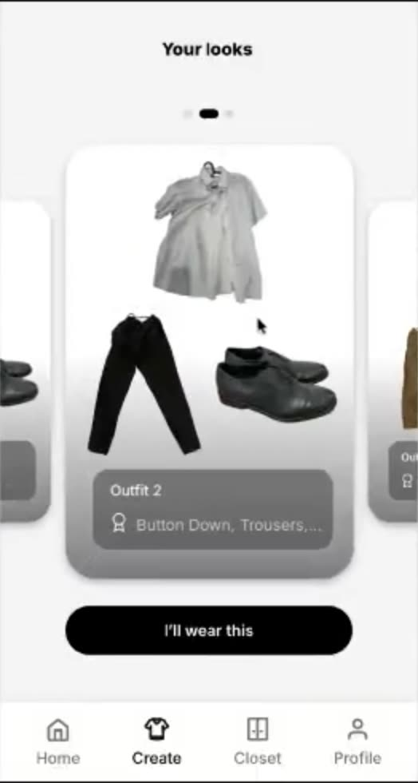
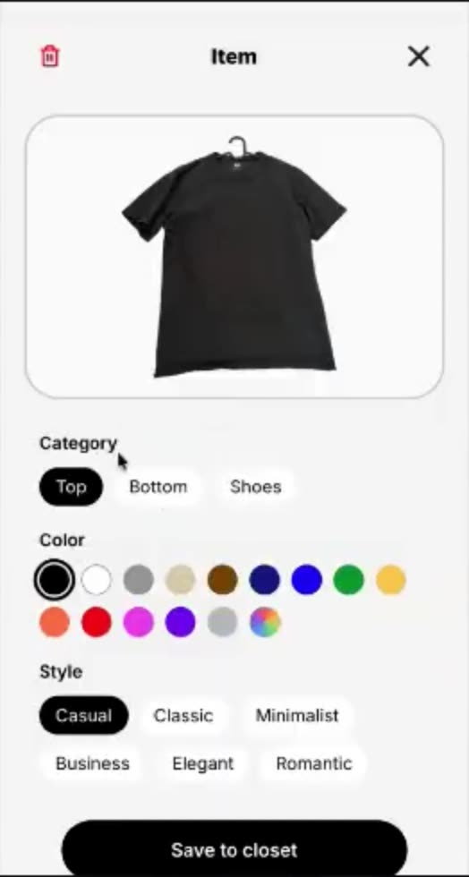
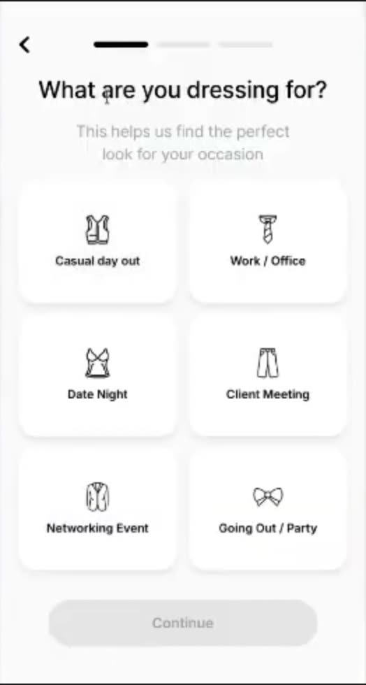
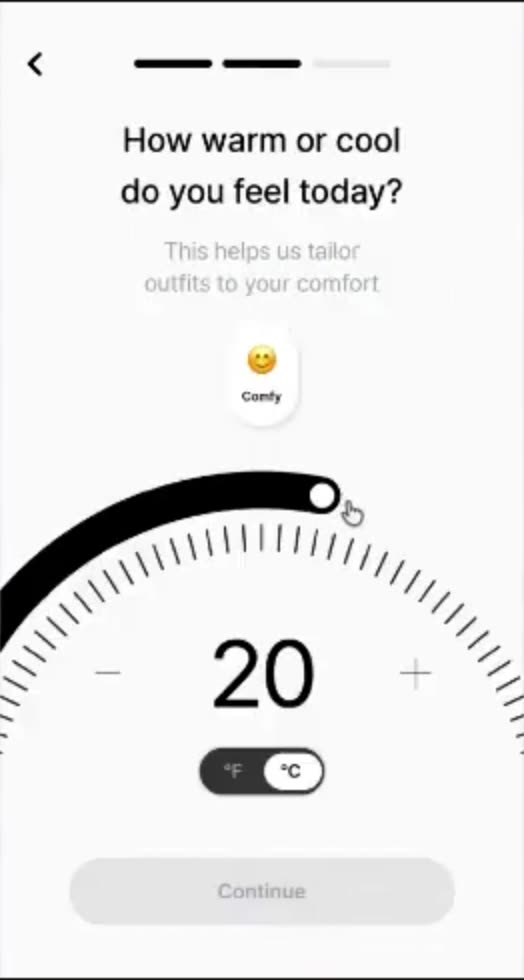
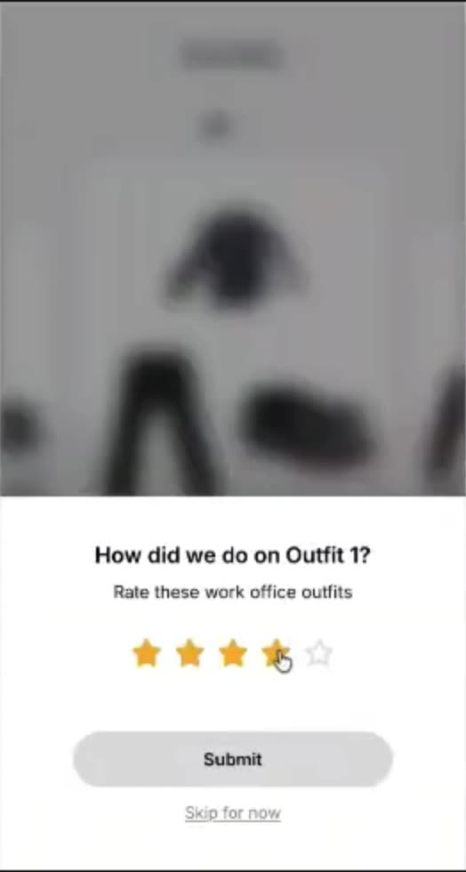
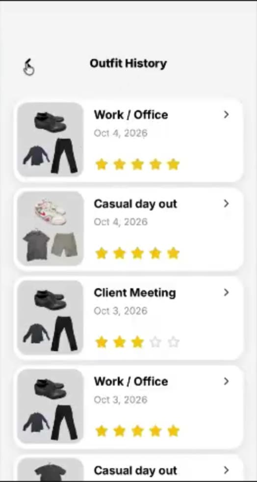

Overview
Closet AI is a closet assistant. You photograph your clothes once and each item is tagged by category, color, and style with no manual entry. You tell it the occasion and the weather. It gives you a complete, ready to wear outfit.
Every recommendation comes from your own wardrobe. There are no shopping links and no outside suggestions. That constraint is the product.

Customer's Challenge
Our target customer is a young working professional who owns plenty of clothes they like and still freezes in front of the closet before a date, a happy hour, or a family dinner. It happens two or three times a week, and it usually ends with the same three shirts or a text to a friend.
It's not that I don't know what looks good. I just have too many options.
Customer interview, 500-item closetThe biggest thing we learned: the problem is not taste. It is choice overload. Friction scales with closet size and variety, so the more you own, the harder the decision gets. That makes it a decision relief problem, not a styling problem.
What did we ask?
- How big their closet is and how much of it they wear
- The last time getting dressed was stressful, and why
- Who or what they turn to for a second opinion
- Which wardrobe apps they tried, and when they quit
- What a good recommendation would need to know about the day
We also read what people say about the apps already in this space. Two complaints repeat. Setup means photographing a hundred items before anything useful happens. And the suggestions feel random, or ignore half the closet.
Persona
Young Working Professionals like Ken
![Ken]() Ken25 · San Francisco
RoleB2B Sales
ScheduleHybrid, in office 3 days a week
Closet size40+ pieces, mostly worn on repeat
Re-decision moments2 to 3x per week
Ken25 · San Francisco
RoleB2B Sales
ScheduleHybrid, in office 3 days a week
Closet size40+ pieces, mostly worn on repeat
Re-decision moments2 to 3x per week
Ken matched with someone on Hinge. Tonight is the first date, in an hour. He owns more than 40 pieces he actually likes, but keeps reaching for the same three shirts.
He tries on three outfits, can't tell if any of them reads “trying but not too hard,” and ends up texting a friend for a second opinion. Again.
This isn't a one-off. It's dates, happy hours, his cousin's engagement dinner: never a big shopping trip, always a small, stressful re-decision.
The Closet Shopper (wear what you own)
Closet shoppers have decided to stop buying and start wearing. This is the first segment in our go to market plan, because they already gather in no-buy and capsule wardrobe communities.
Age: 29Work: Marketing associateCloset: 150+ pieces, many thriftedLocation: Washington, DC
Personality
Bio
Halfway through a no-buy year. Has tried two wardrobe apps and quit both during setup. She is motivated by the outcome and will forgive a rough edge if the outfits are good.
Goals
- Wear the pieces she forgot she had
- Get through the year without shopping
- Share outfits with her community
Frustrations
- Photographing 100 items before anything works
- Pairings that feel random
- Apps that skip half her closet
How persona discovers the product
Reddit threads, capsule wardrobe creators, Pinterest outfit grids.
How persona uses the product
Joins the waitlist, uploads in batches, and asks for outfits around pieces she has not worn in months.
Motivations
Customer Journey
Ken's Journey Map
As someone with plenty of clothes and an event in an hour, I want one complete outfit from what I already own, so that I can stop second guessing and leave on time.
Define
Ken does not need to be taught style. He needs the decision made smaller. He will not catalog for a weekend, and he will not trust an outfit that includes something he does not own. With that in mind, we framed the problem as two How Might We statements.
- How might we turn a full closet into one confident outfit in under a minute?
- How might we learn enough about the occasion without making the user fill out a form?
Ideation
We went wide first, then grouped the ideas and picked what belonged in the first build. Anything that pointed the user toward buying something was cut early, because it breaks the one promise the product makes.
Prototype and User Testing
The product works end to end. Here is one full run, from first open to a rated outfit.
- Onboarding: four cards explain scan, occasion, outfit, and rating.
- Sign in with email and password or Google.
- Add a clothing photo. The app analyzes it and fills in category, color, and style.
- Review the tags, fix anything, and save it to the closet.
- Pick what you are dressing for, then set how warm or cool it feels.
- Get outfits built from the closet and tap "I'll wear this".
- Rate the outfit. It lands in Outfit History with its stars.

One photo in. Category, color, and style come back filled, and you can correct them.
Six occasions, from a casual day out to a client meeting.
A dial for how warm or cool it feels, in Fahrenheit or Celsius.
A quick star rating after you choose.
Every outfit is saved with its occasion, date, and rating.System Architecture
(article of clothing)Occasion Selection
Feedback & Rating Loop
What testing changed
- Some requests came back with no outfit at all. The matching rules were too strict, so we relaxed them until the model can always return at least one.
- Calls to the AI provider failed now and then during development. We added retry logic, which solved it.
- Weather auto fill started as automatic. It became an explicit "Use my location" action so nothing is looked up without the user asking.
- Shoes had no subtype, so weather and activity could not change the footwear. Flagged with the upload owner.
User Stories and Acceptance Criteria
Risks and Remediations
Pricing Strategy
- Pre-launch. The waitlist is free and so is the closed beta.
- The first 100 beta users come from the most active waitlist members.
- Week 2 return rate: people who upload their closet and come back.
- Cost per outfit generated, since every recommendation is a model call.
- 90 day plan: 1,500 waitlist signups and 100 active beta users. These are goals, not results.
Lean Business Model Canvas
- Photo upload with auto tagging
- Structured occasion and weather
- Complete outfits from owned clothes
- Feedback and rating loop
- Retrieval over the whole closet
- Every item validated as owned
- Occasion inputs most apps skip
- Wardrobe apps: Whering, Indyx, Acloset, Cladwell, Stylebook
- Texting a friend
- The same three shirts
- Time to first outfit
- Week 2 return rate
- Outfit rating
- Activated waitlist members
- Closet AI = the friend you text for a second opinion, who knows your whole closet
- Short form video
- Reddit and Pinterest
- Build in public on LinkedIn
- Waitlist with referrals
- Waitlist members
- No-buy and capsule wardrobe communities
- People who quit other wardrobe apps
Sources
Target customer, interview quote, product steps, system architecture, challenges, and team: Closet AI Demo Day deck. Feature rules: Authentication and Occasion Selection PRDs. Segments, channels, competitor complaints, and targets: Closet AI go to market plan, September 2026.